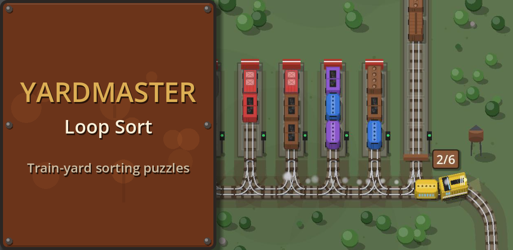
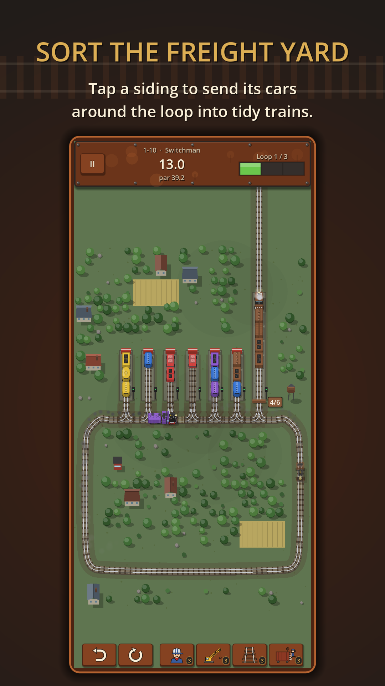
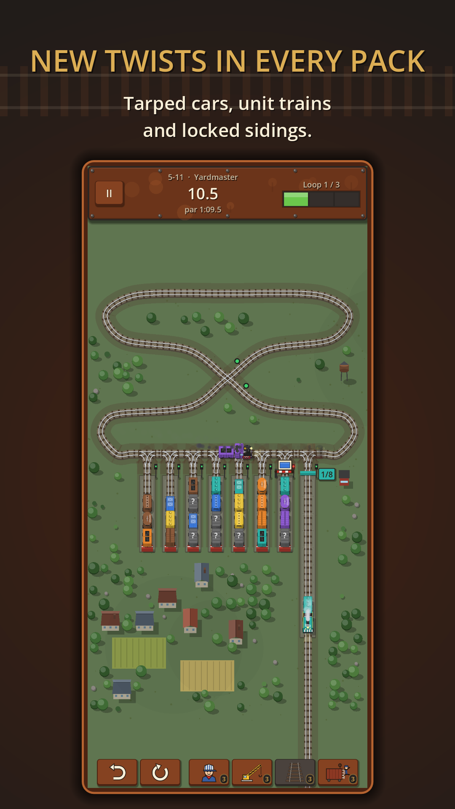
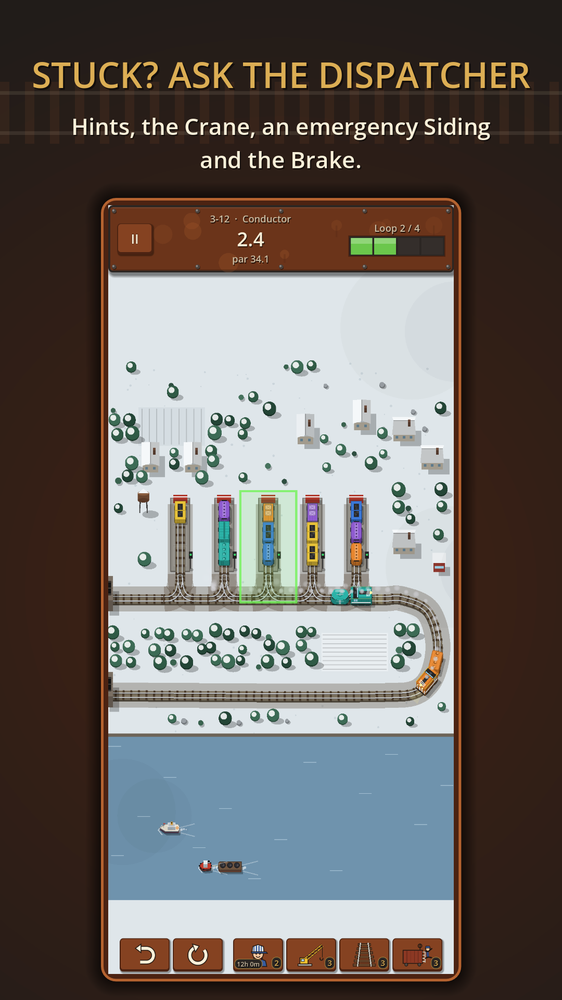
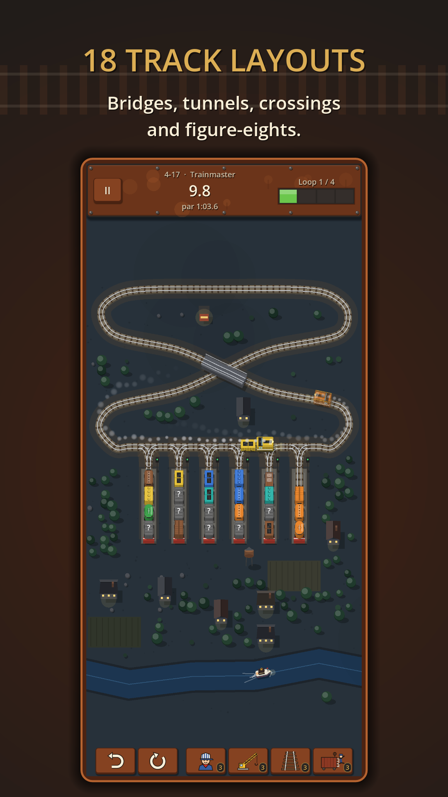
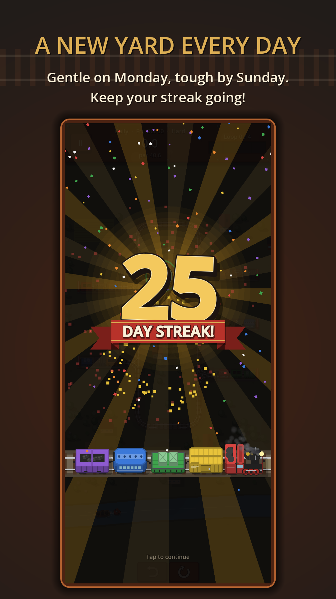
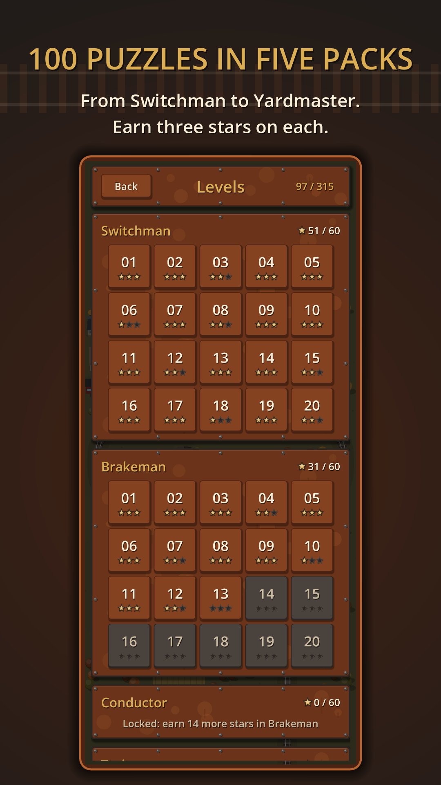

Yardmaster: Loop Sort

Take charge of a busy freight yard. Cars of every color are tangled across the sidings, and it's your job to sort them into tidy trains.
Tap a siding to send its top cars out onto the loop track. They travel around the yard and switch into the first siding that can take them. Plan your moves, keep the loop from jamming, and finish each yard in as few moves as you can.






Easy to start, hard to master
- Tap-to-dispatch controls, taught step by step in a short tutorial
- Earn up to three stars by beating par
- Undo any move and restart any time; there's no time limit
100 yard puzzles in five packs
Work your way up from Switchman through Brakeman, Conductor and Trainmaster to Yardmaster. New twists arrive as you go:
- Tarped cars hide their color until they're uncovered
- Unit trains must be filled with a single color before they can depart
- Locked sidings open only once every car of their color is sorted
Daily Yard and Free Play
A new yard every day, the same for every player. Monday starts gentle and the challenge builds to Sunday, so keep your streak going. Or pick Easy, Medium, Hard or Expert in Free Play and play fresh yards whenever you like.
Handy boosters
Stuck? Ask the Dispatcher for a hint, lift cars with the Crane, lay an emergency Siding, or slow things down with the Brake. You get three of each, a used booster comes back 12 hours later, and you can watch an optional ad for an extra one.
A living rail yard
- 18 track layouts, with bridges, tunnels, crossings and figure-eights
- Steam and diesel engines, scenery and traffic around the yard
- Relaxing music and railroad sounds
- Color symbols for color-blind players
- Play in 11 languages: English, Español, Português, Français, Deutsch, Italiano, Русский, 日本語, 한국어, 简体中文 and Türkçe
Ads and purchases
The game is free to play with a banner ad, plus a short ad between levels after every five minutes of play. A one-time purchase removes the banner and the ads between levels, and makes boosters come back every 2 hours instead of 12; optional ads for extra boosters stay available if you want them.
Support
Questions, feedback or bug reports: baylandblue@gmail.com